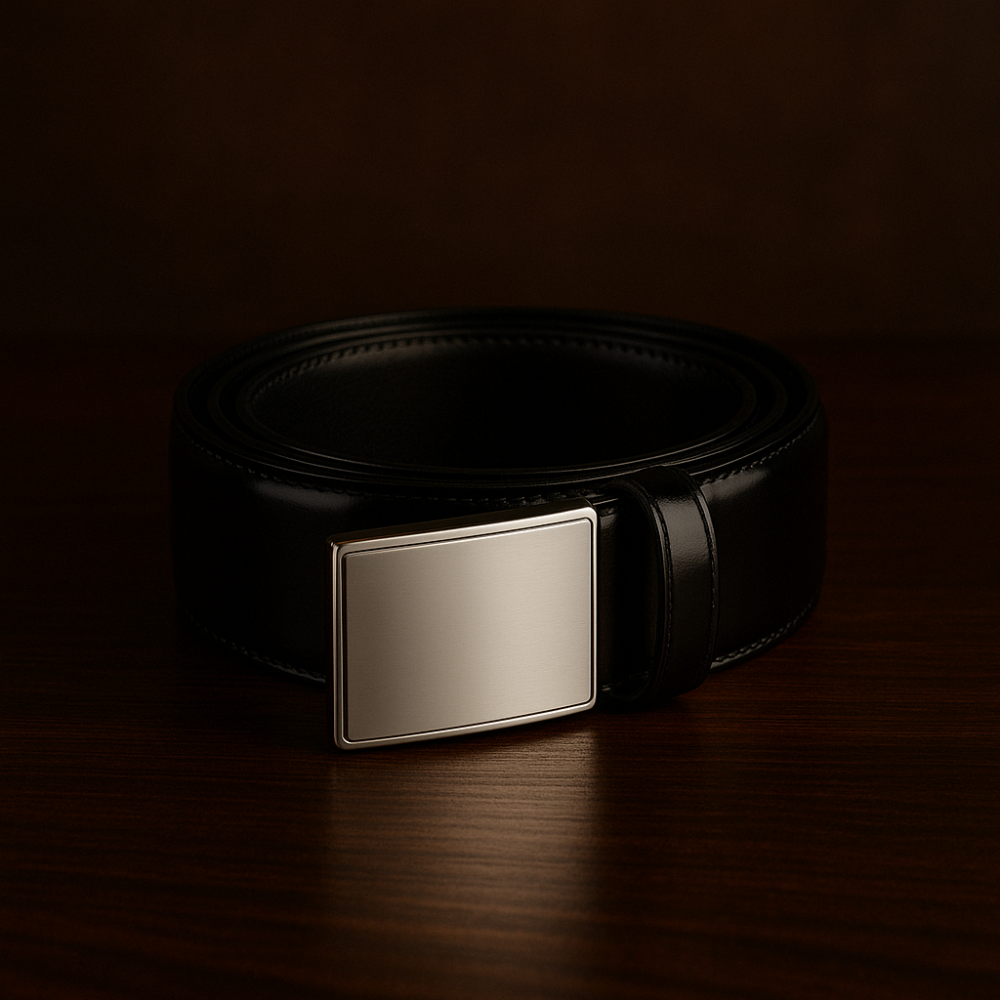
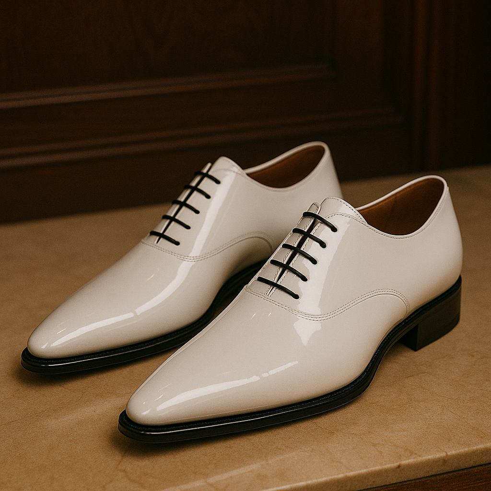
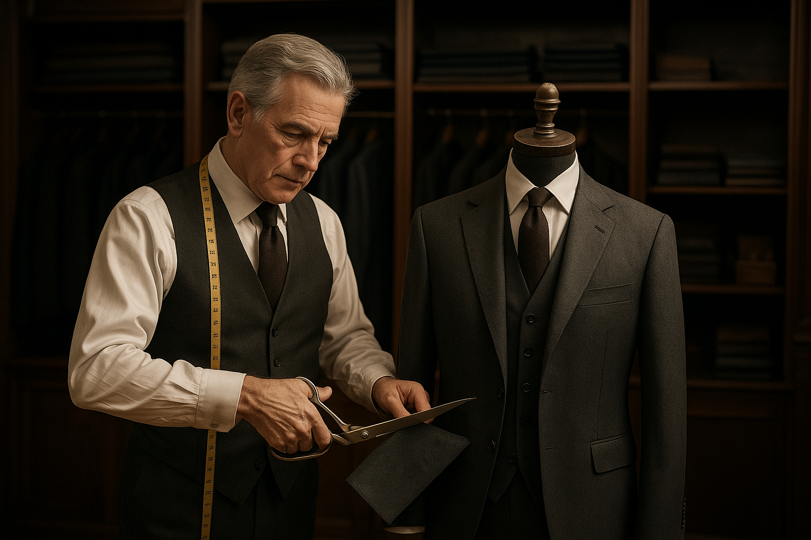
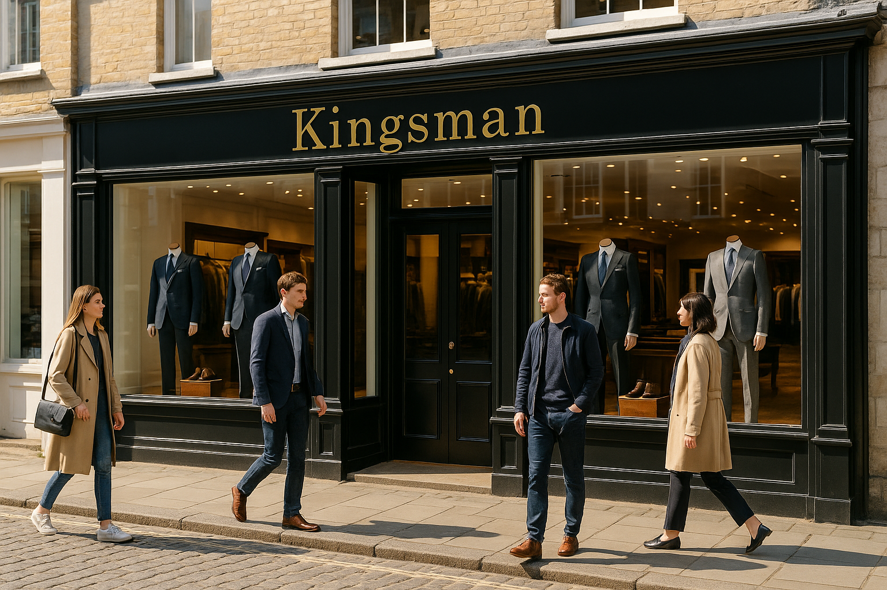
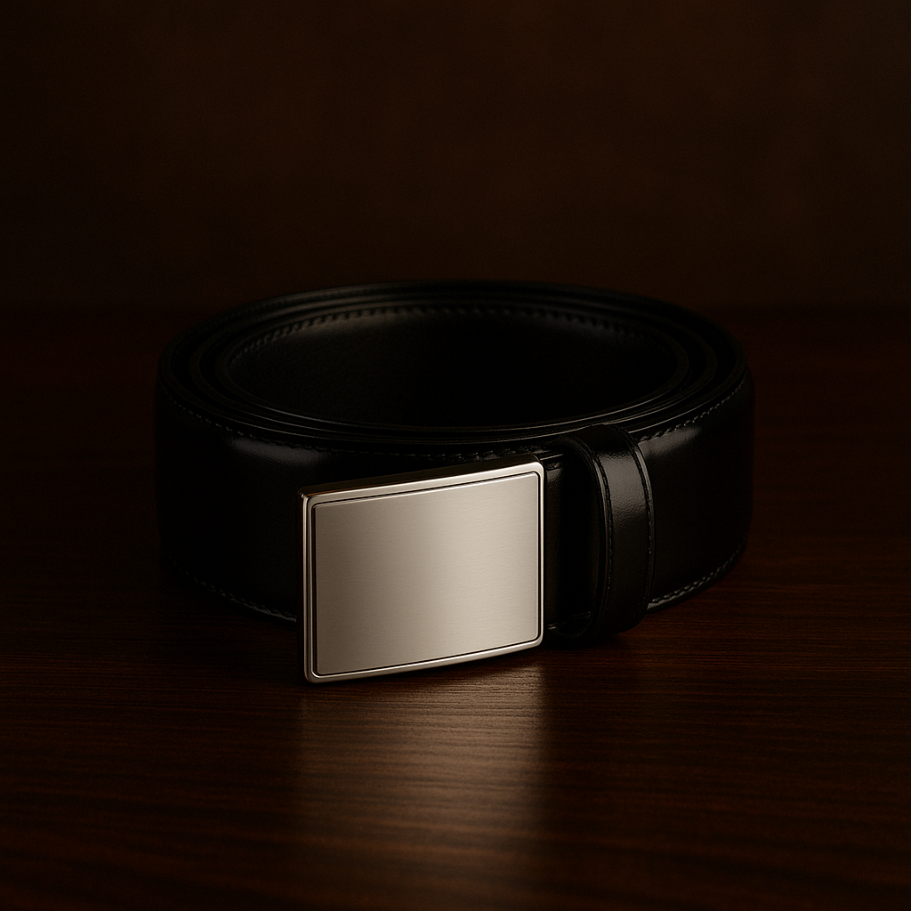
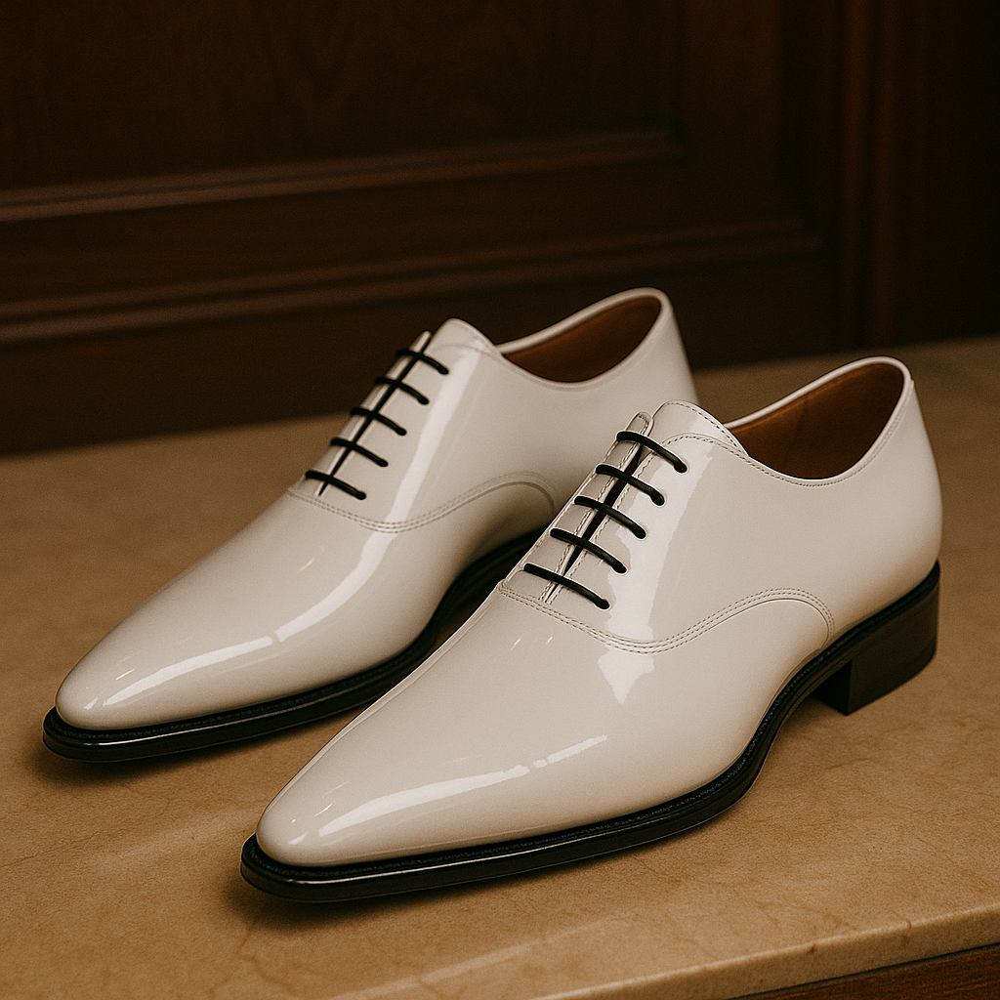
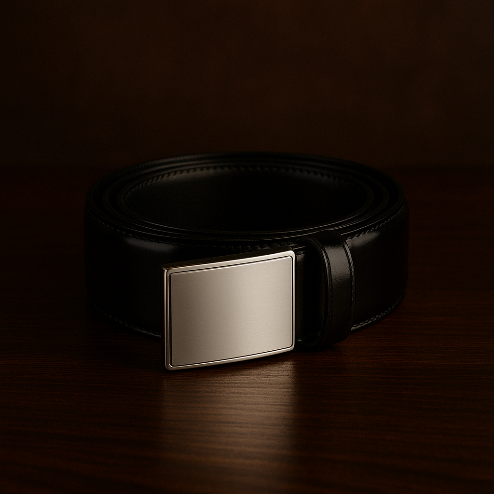
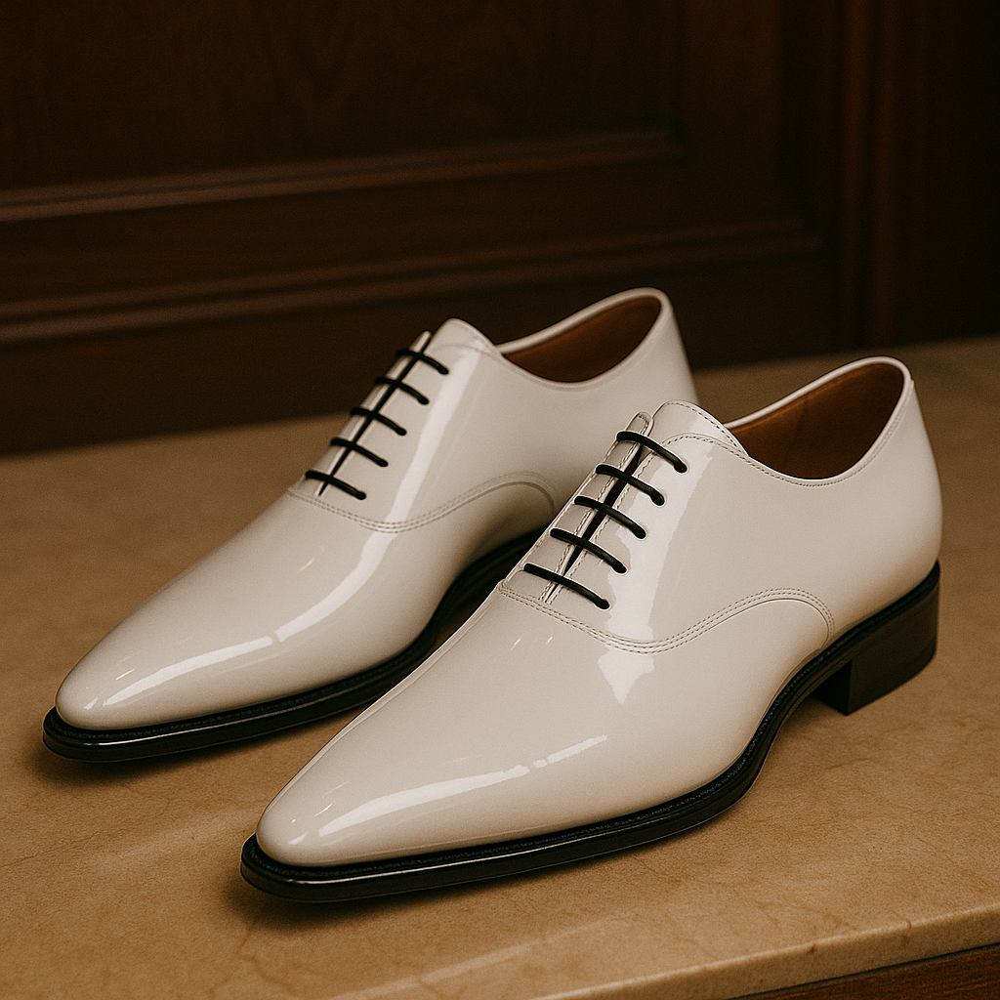

Home
Tienda
Galería
Historia
Contacto
Colección Destacada
 
Una selección curada de nuestras piezas más sofisticadas.
Visitar Tienda
Kingsman Tailoring

Lo que comenzó como un pequeño taller británico hoy es sinónimo de excelencia en sastrería. Cada prenda está diseñada con dedicación, historia y un toque de magia artesanal.
Conocé nuestra historia
Boutique Historica

Elegancia, tradición y servicio personalizado en un entorno único.
Contactate con nosotros
 


